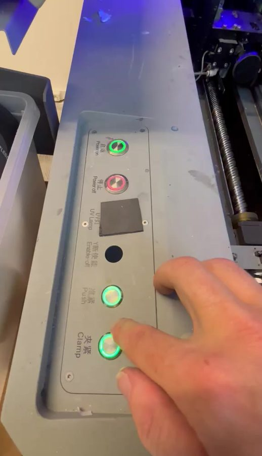

1
During printing
Printing one bottle takes 1 minute and 51 seconds. Use that time. This is what one round looks like:
StartBottle in (Push → Clamp), Print → Yes
Printer running · approx. 1:51 minMeanwhile you do:
- sleeving
- stickering
- tidying up
- preparing the next print job
DoneBottle out (Clamp → Push), next one in straight away
1
SleevingPrinted bottles that need a sleeve.2
StickeringStickers on the bottles or packaging.3
Tidying upWorkspace, boxes and waste.4
Prepare the next jobSet out blank bottles, look up the next file.✓ Do tasks while the printer prints
✗ Leave the printer empty because you are still busy
